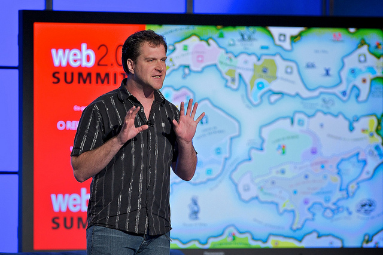

Intensive, hands-on training for managing and building location based services
About the Workshop
Location based services (LBS) are becoming the order of the day. At any given point in time, individuals are searching for the closest ATM or restaurant around their homes/offices, plotting their location on Twitter and Facebook to keep their friends updated about their whereabouts, checking the situation with traffic while commuting, etc. With services boiling down to personalization and context, location provides a key dimension. The possibilities in the area of location based services are therefore immense.
Cartonama workshop is based on the understanding that people need to learn more about the tools with which they can manage their geographic data. This workshop will provide a platform where developers, neogeographers and entrepreneurs working on location based services will get hands-on understanding about advanced tools - server side and client side - to manage and represent their geographic data.
The workshop will involve hands-on experience and training to work with tools ranging from databases, tile servers, TileMill, Geocoding APIs, Search APIs and JavaScript front end libraries. - OpenLayers and Leaflet. Discussion sessions and lectures on issues such as quality of open geographic data, commercialization, licensing and privacy are interspersed between the hands-on training sessions. This format will allow participants to think through the practical and conceptual issues that are arising or will potentially arise when they are working with their own geographic datasets to develop location based services. For more details about the sessions and the workshop visit the HasGeek funnel.
Speakers
In 2008, Mikel Maron and Schuyler Erle conducted a series of workshops in India. From Delhi to Ludhiana, Pune, Mumbai, Kerala and Bangalore. The workshop series poked people like Arun Ganesh and inspired them to map and build applications. Arun and his friends mapped Chennai extensively and created beautiful maps. They also put the data together into busroutes.in. BusRoutes.in remains as one of the best examples of using crowdsourced geographic information to create applications that are useful. Now we have Mikel and Schuyler back in India at the Cartonama workshop, where Arun and his friends will come to learn about new tools and techniques to improve their projects.
Schuyler Erle
Free Software developer and evangelist for over fifteen years. He was a co-author of 'Mapping Hacks' and 'Google Maps Hacks'. He was also a co-founder of the OpenLayers and TileCache projects, and is a charter member of the OSGeo Foundation. He also works in the fields of wireless networking, intelligent search engines and the Semantic Web and was the lead developer of NoCatAuth which is an open source wireless captive portal. He built geocoder.us, which is an open source United States. address geocoder. More recently, Schuyler helped found the Humanitarian OpenStreetMap Team and serves on its Board of Directors. He currently resides in San Francisco.
Mikel Maron
Programmer and geographer working for impactful community and humanitarian uses of open source and open data. He is co-founder of Ground Truth Initiative, and of the Map Kibera project. He’s on the Board of the OpenStreetMap Foundation, and President of the Humanitarian OpenStreetMap Team, having helped to facilitate the OSM response to the Haiti earthquake. He’s travelled widely, organizing projects in India, Palestine, Egypt, Swaziland, and elsewhere. Previously, he co-founded Mapufacture and worked on collaborative platforms, and geoweb standards, with a wide spectrum of organizations from UN and government agencies to anarchist hacker collectives.
Sessions


Registration
The workshop is open for 30 participants only. Tickets are priced at Rs. 10,000.
Your ticket price covers workshop facilities and the facilitators' fees. You must bring your own laptop and GPS-enabled device. Participants are expected to bring their own GPS devices / mobile phones and computers for the application building exercises.
Venue
The workshop will be held at the Centre for Internet and Society (CIS), Bangalore. The congenial atmosphere at CIS facilitates both formal and informal interactions, and peer-to-peer learning.
The Center for Internet and Society
No. 194, 2nd C Cross, 4th Main
Opposite Domlur Club
Domlur 2nd Stage, Bangalore - 560 071
About
HasGeek is a developer-led initiative, and has been un-organising the unconference scene since 2010. HasGeek is an attempt to solve the problem of insipid conferences organised around buzzwords by uninterested, soulless corporate entities who pitch them as company training events or as places for companies to pick up hot developers.
We are attempting to build a new space, a space that is genuinely respectful of the communities and topics that we choose to engage with. We want to be a space for developers who are as excited as us about technology and the possibilities that it creates, not to be a recruitment fair (though we hope you do find partnership possibilities at our events).
We are community-driven – check out our speaker-selection funnel, where you decide what talks to listen to by voting up or down – and small – there are just a handful of us running the show. We are doing this because this is what we love: bringing a whole bunch of us geeks together, sharing our interests and expertise and hanging out later over beverage of choice.